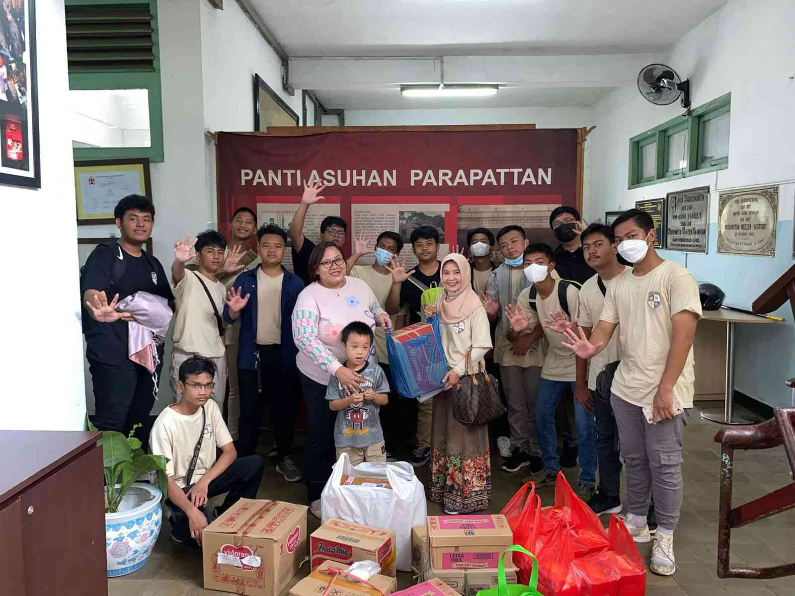

Website ini adalah platform edukasi yang membahas perjalanan Indonesia menuju Generasi Emas 2045, dan memberikan pemahaman tentang isu-isu sosial yang dapat menghambat kemajuan generasi, seperti perundungan, kekerasan remaja, dan potensi radikalisasi. Situs ini juga mengangkat kasus-kasus edukatif sebagai contoh bagaimana masalah sosial dapat berkembang menjadi tindakan berbahaya apabila tidak dicegah sejak dini. Fokus utama website ini tetap pada peningkatan kesadaran, pembinaan karakter, dan membangun generasi Indonesia yang maju dan tangguh.
Tujuan website ini adalah mengedukasi generasi muda tentang pentingnya karakter, empati, dan persatuan dalam membangun Indonesia Emas. Melalui pembahasan isu-isu seperti perundungan, tekanan sosial, dan contoh insiden berbahaya, website ini mengajak pembaca memahami betapa pentingnya mencegah kekerasan sejak dini. Tujuan akhirnya adalah mendorong generasi muda menjadi lebih sadar, bijaksana, dan berperan aktif menjaga lingkungan sekolah serta bangsa agar tetap aman dan maju.
Website ini dibuat oleh Freya dan Rafael, kami menyadari bahwa generasi muda adalah fondasi utama Indonesia Emas, dan karena itu pengetahuan serta kesadaran harus ditanamkan sejak sekarang. Kehadiran kasus-kasus seperti perundungan atau insiden berbahaya di sekolah mendorong kami untuk menciptakan ruang edukasi yang dapat memperkuat karakter dan mental generasi muda. Dengan semangat nasionalisme dan keinginan untuk perubahan positif, website ini lahir sebagai langkah awal membangun bangsa yang lebih aman dan maju.